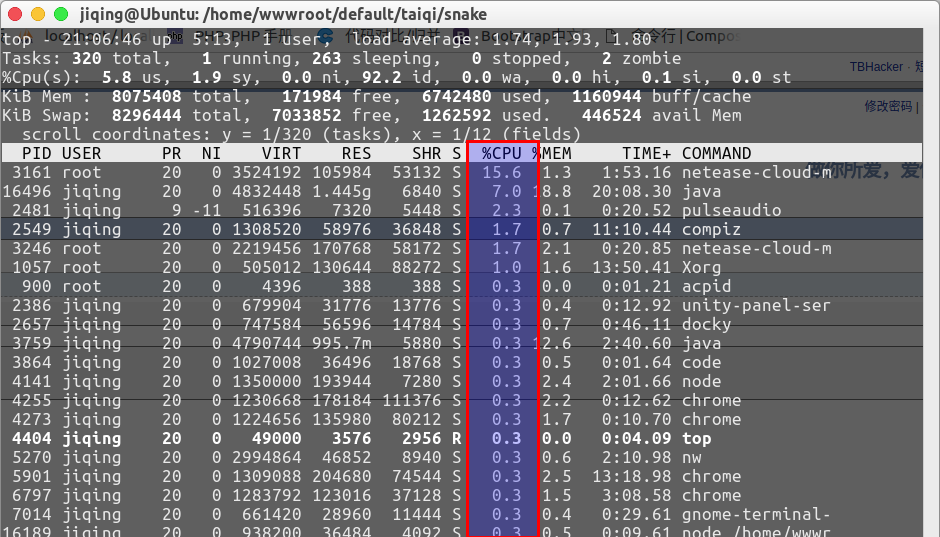
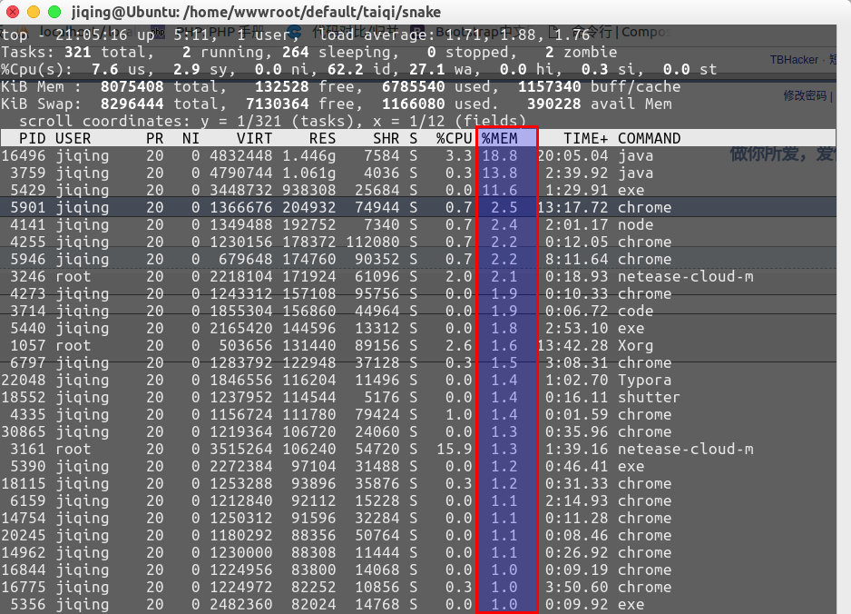

top命令按内存和cpu排序
按进程的CPU使用率排序
运行top命令后，键入大写P。
有两种途径：
a) 打开大写键盘的情况下，直接按P键
b) 未打开大写键盘的情况下，Shift+P键

按进程的内存使用率排序
运行top命令后，键入大写M。
有两种途径：
a) 打开大写键盘的情况下，直接按M键
b) 未打开大写键盘的情况下，Shift+M键

按Enter键可以查看，及时的情况。
TOP交互命令如下
c： 显示完整的命令
d： 更改刷新频率
f： 增加或减少要显示的列(选中的会变成大写并加*号)
F： 选择排序的列
h： 显示帮助画面
H： 显示线程
i： 忽略闲置和僵死进程
k： 通过给予一个PID和一个signal来终止一个进程。（默认signal为15。在安全模式中此命令被屏蔽）
l: 显示平均负载以及启动时间（即显示影藏第一行）
m： 显示内存信息
M： 根据内存资源使用大小进行排序
N： 按PID由高到低排列
o： 改变列显示的顺序
O： 选择排序的列，与F完全相同
P： 根据CPU资源使用大小进行排序
q： 退出top命令
r： 修改进程的nice值(优先级)。优先级默认为10，正值使优先级降低，反之则提高的优先级
s： 设置刷新频率（默认单位为秒，如有小数则换算成ms）。默认值是5s，输入0值则系统将不断刷新
S： 累计模式（把已完成或退出的子进程占用的CPU时间累计到父进程的MITE+ ）
T： 根据进程使用CPU的累积时间排序
t： 显示进程和CPU状态信息（即显示影藏CPU行）
u： 指定用户进程
W： 将当前设置写入~/.toprc文件，下次启动自动调用toprc文件的设置
<： 向前翻页
>： 向后翻页
?： 显示帮助画面
1(数字1)： 显示每个CPU的详细情况

· Windows 服务器高物理内存占用问题排察
· 一次线上OOM问题的个人复盘
· 记一次 .NET 某传感器采集系统 线程爆高分析
· 亿万级分库分表后如何进行跨表分页查询
· Three.js 进阶之旅：全景漫游-初阶移动相机版
· 零基础实现Java直播（二）：实现流程
· 春节无法线下社交聚会，来线上“一起X”共享体验
· AI 加持实时互动｜ZegoAvatar 面部表情随动技术解析
· 告别尬聊，解锁秀场+社交新玩法（内含源码+Demo)
· Flutter 屏幕采集如何实现(提供示例demo)